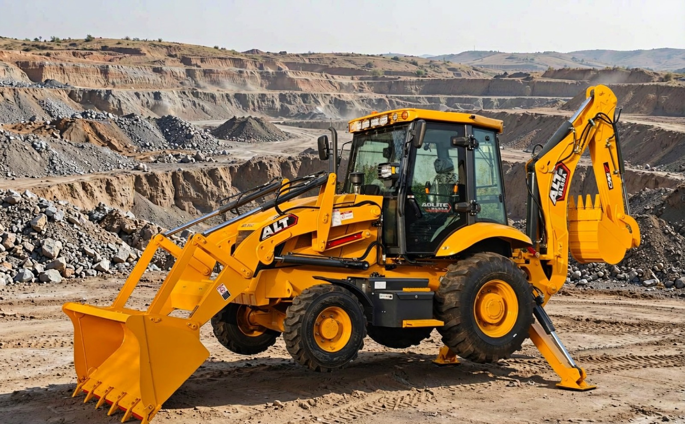

The Short Answer
Yes — a backhoe loader is one of the most sensible first machines for a small-scale mining operation, precisely because a small site is never only a mine. It is a mine, a road, a loading yard and a construction job sharing one fence. The backhoe end strips overburden, digs and cleans pits, loads trucks and handles tailings; the loader end keeps the haul road graded and the stockpiles shaped. No single-purpose machine covers that spread at anything close to the same cost.
But the same honesty cuts the other way. A backhoe loader is not an excavator, not an underground machine, and not a hard-rock miner. There are jobs on a mine where putting a backhoe loader on the task is not a compromise — it is a mistake with a repair bill attached. The rest of this article separates the two lists cleanly, because most of the damage I hear about comes from buyers who knew the first list and never got told the second.
What "Small-Scale Mining" Actually Covers
The phrase means different things in different enquiries, and the machine advice changes with each meaning. When a buyer tells me "small-scale mining", they usually mean one of four realities:
- Alluvial gold — surface gravels, creek banks and old river channels, stripped and washed. The material is soft; the work is dig, move and feed a wash plant.
- Sand and gravel pits — riverbed and terrace deposits dug continuously and loaded out daily. Soft material, high cycle counts.
- Small quarries and aggregate — weathered overburden stripped off rock that then gets drilled and blasted. The machine works the soft layers and loads the broken rock.
- Clay, coltan and similar surface deposits — shallow open pits where the digging is soft but the ground conditions — water, clay, spoil heaps — are hard on the machine.
What it does not mean, for the purposes of this article: underground workings, deep open pits with multiple benches, or hard-rock mining without blasting. Those are different businesses with different equipment, and the boundaries are exactly where the next sections go.
Where the Machine Works on a Small Mine
Almost everything in the CAN list shares one setting: the surface. The photograph below is the working environment this whole article is about — and what it leaves out of frame is as deliberate as what it shows:

The working environment this article describes: benches, spoil piles and a haul road — all surface. What never appears in the frame matters just as much: no underground adit, no face below the dig-depth ceiling. The five jobs in the CAN list happen inside this frame; the four entries on the CANNOT list are the ones that would leave it.
What It Can Do: The Five Real Jobs
1. Stripping overburden
Before any wash plant or crusher sees ore, the covering layer has to come off — topsoil, clay, weathered rock. This is backhoe work at its most natural: soft-to-medium material, wide open ground, long parallel passes. On alluvial gold sites this single task can occupy the machine for weeks at a time, and it is the task I point to first when a buyer asks what the machine will actually do all day.
2. Digging and cleaning the pit
Shallow pits — creek gravels, terrace deposits, clay holes — sit comfortably above the machine's dig-depth ceiling. Digging, benching the shallow face, cleaning the floor so the wash plant keeps fed, cutting the sump that keeps water under control: all standard work. The machine's compact footprint is an asset here, because small sites rarely have room for a full-size excavator to swing a counterweight comfortably.
3. Loading trucks
Whether it is feed to the wash plant or product out the gate, somebody loads trucks every working day, and the loader end does it with a cycle that a dedicated excavator setup on a small site simply cannot match for versatility — the same machine that loaded in the morning drains the water trench in the afternoon. For the load-and-carry distances typical of small pits, the driving back and forth is a feature, not a compromise.
4. Stockpiles and tailings
Shaping stockpiles, pushing up tailings, re-handling rejected material — the loader end earns its keep again. Tailings handling in particular is continuous, low-precision work that eats dedicated-machine hours on sites that cannot afford a second machine.
5. Everything that is not mining
The haul road needs grading after the rains. The drainage trench silts up. The wash plant pad needs levelling, the camp needs a soakaway, the access track needs a culvert. On a small mine these jobs decide whether the productive machine gets to work at all — and they are construction jobs, which is exactly what a backhoe loader is built for. This fifth category is the real reason the machine makes sense: a small site has mining days and construction days, and the backhoe loader is the only machine in its price class that is properly equipped for both.
What It Cannot Do: The Honest List
Now the other list — the one that protects the machine and the buyer. Four assignments a backhoe loader should refuse:
- Underground work — ever. No ventilation, confined space, rock above the operator. This is not a capability gap to negotiate with; it is a different machine class and a different safety regime. If your site has an adit, the backhoe loader stays at the portal and other equipment goes in.
- Benching a deep pit. The dig-depth ceiling is a hard number on the spec sheet — typically four to five and a half meters on the machines I sell — and below it the boom simply cannot reach. A backhoe loader cannot bench its way downward the way a full excavator can; deep pits are a different equipment decision.
- Digging unbroken hard rock. Fresh, unblasted rock is bucket work for no machine of this class. With a ripper tooth on weathered layers, or a hydraulic breaker on roadmaking and secondary breaking, the machine has a role — but the production digging of hard rock belongs to drilled-and-blasted methods, full stop.
- Sustained high-tonnage loading. A mine that loads hundreds of tons per day, every day, is drifting toward excavator territory — not because the backhoe loader cannot fill a truck, but because cycle economics and machine hours favor a dedicated loader as volumes grow. There is a real graduation point, and pretending there is not is how machines get worked past their design life.
Notice the pattern: none of these are about quality or build strength. They are about physics and economics — reach, rock, air and cycles. A stronger machine of the same type does not escape the list; a different machine type does.
The Depth Question, Stated Honestly
Depth deserves its own section because it is the limit buyers test most often in enquiries — "can it dig eight meters?" is a question I receive in some form every month, and the useful answer needs the pit, not just the spec sheet, in view.
The machine digs to its rated depth at the face directly behind it — that is the geometry the boom was drawn around, and it is covered plainly in the how-it-works article. What the number does not include is standing on the edge of a rising hole and reaching down and out. Every meter of depth you work below the rated ceiling buys you wall collapse risk, spoil-heap slope risk and a machine parked on ground it is undermining. The professional method on sites that need more depth is not courage — it is benching: step the pit down in lifts the machine can reach, with the haul ramp engineered, which is precisely the design work that separates a small pit from a deep one. For a small-scale operation, the practical rule I give buyers: if the ore body lives below about five meters, the backhoe loader opens the site and other equipment takes the mine. Buyers weighing this against machine weight and transport should also read the weight and specifications article, because the same numbers drive both.
Hard Rock Needs a Hammer, Not a Bucket
Every small quarry raises the question constantly, and the answer is a division of labor, not a machine substitution. Drilled and blasted rock breaks into — roughly — movable pieces. From there the backhoe loader is genuinely useful: stripping the weathered cap, cleaning between benches, breaking the oversize slabs that the blast left, with a hydraulic breaker, and loading out the muck pile. What it must not be asked to do is dig the fresh face itself, or hammer all day as a substitute for a better blast. A breaker that does the drilling crew's job is the right tool; a breaker that does the blasting crew's job is an expensive way to break pins. Buyers adding a hammer should also confirm the machine carries the hydraulic lines and the flow to run one — the fit between carrier and attachment is covered in the attachments guide, and the bucket side of the same story — ripper tooth for the weathered layers, ditching and GP buckets for the soft work — is in the bucket types article.
The Configuration Mining Work Actually Demands
Mining enquiries bring out the worst configuration advice in this industry — long option lists sold as "mining packages". The honest version is shorter, and every item on it is matched to a site condition rather than to an upgrade ladder:
- 4WD, matched to ground. Spoil heaps, wet pit floors and clay — the drivetrain question answers itself on most mine sites; the reasoning is the same as in the 2WD vs 4WD article.
- Closed wet axles, matched to dust and mud. Where axles swim in fine dust or sit in water, sealed wet brakes and axle breathers are the difference between a service item and a failure; the full logic is in the wet axle article.
- Air pre-cleaner and heavy filtration, matched to the dust — a mine is a dust factory, and the air the engine breathes is the single most stressed system on the site.
- The right tires, matched to sharp rock — cut resistance at the correct pressure beats tread pattern cosmetics; the whole subject is in the tire guide.
- Canopy or cabin, matched to climate and hours — the same choice every buyer makes, discussed in its own right elsewhere on this site.
- Breaker hydraulics only if a breaker is actually in the plan — lines and flow specified at order time cost a fraction of retrofitting them.
Fuel deserves one line of its own, because remote sites buy diesel retail: the consumption logic that decides daily operating cost is covered in the fuel consumption article, and nothing about mining changes it.
The Honest Comparison
As with every configuration decision, there is no "mining machine" and "ordinary machine" — there is the site's own arithmetic. Here is the table I work through with mining buyers:
| Your site | What I would quote | Why |
|---|---|---|
| Alluvial gold, creek and terrace gravels — one machine must do everything | Backhoe loader, 4WD, wet axles, pre-cleaner | Five surface jobs in one machine; the site's construction days are covered by the same purchase |
| Sand and gravel pit, high daily cycles, short hauls | Backhoe loader now — with the graduation point named | Load-and-carry suits the distances; when daily tonnage outgrows the cycle, the machine demotes to pit support rather than wearing out |
| Small quarry — blasted rock, weathered cap, oversize slabs | Backhoe loader with breaker hydraulics and ripper-ready bucket package | The machine works the soft layers and the muck pile; the blast does the hard work — never the reverse |
| Ore below five meters, or any underground working | A different machine — and I will say so | Depth ceiling and confined air are physics, not options; the honest quotation is the one that does not sell this machine into that site |
| Remote site, thin service network | Simpler configuration, consumables planned ahead | Every extra joint and sensor is a future parts run; the maintenance arithmetic is in the spare parts article |
Five correct quotations for five different sites. The pattern: the machine fits the surface work — and the honest supplier names the exact site where it does not.
How I Quote a Mining Enquiry
Mining enquiries are where the "can and cannot" discipline earns its money, so I ask the same four questions every time:
- What is the material, and how deep does it run? Material decides the tooling; depth decides whether this machine class is in the conversation at all.
- What moves per day, and how far? Tonnage and haul distance decide whether the machine is a producer or a support unit — and both are legitimate, but they are different quotations.
- What else must the machine do? Roads, water, camp, plant pads — the construction share of the week is often what justifies the purchase, and buyers under-count it.
- What does the site do to the machine? Dust, water, sharp rock, clay — the four site conditions that drive the configuration list above.
Four questions, one honest paragraph about what the machine will refuse to do, and a quotation where every line traces back to a site condition. That is the standard I would want applied to my own purchase.
The Short Version
On a small-scale mine, a backhoe loader is five jobs: stripping overburden, digging the shallow pit, loading trucks, handling stockpiles and tailings, and doing the site's construction work — the last of which is often the real reason the machine pays. It is not four things: it never goes underground, it does not bench a deep pit below its dig-depth ceiling, it does not dig unbroken hard rock — the blast and the breaker share that job — and it does not win a high-tonnage loading contest against a dedicated loader as volumes grow. Configure for the site's four conditions — ground, dust, rock and climate — and the same machine that opened the mine will still be grading its haul road years later. Send me the material, the depth, the daily tonnage and the site conditions, and the quotation will show you which side of every line your site falls on.
Tell Me the Material, the Depth and the Tonnage
Describe your site in four lines — material, depth, daily tonnage, ground conditions — and I will tell you honestly whether a backhoe loader fits it, and quote the configuration that mining work actually demands.
Ask Vivian on WhatsApp